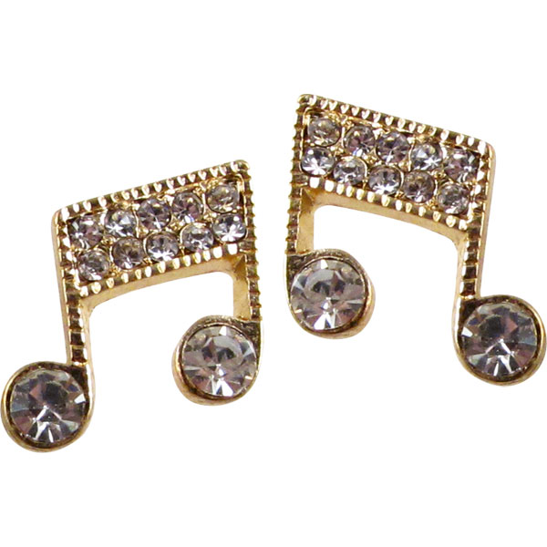

The Futuristic Lipstick will automatically will change the lip shade according to the shade of your dress
Futuristic Shoes will pop out a pair of wheels, when your legs gets tired of walking. These shoes will relax and massage a tired feet
The Futuristic necklace will glow in dark and it will work as a source of light in event of a power failure
Futuristic sunglass will help us to see long distances more clearly and protects our eyes from harmful
ultra violet rays.it also cools our
eyes.
Futuristic earings will play music that will soothen your ears
